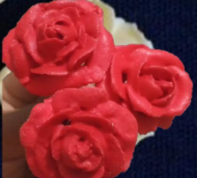

← Volver al módulo 5

Rosas
Elaboración de rosas en glasé real usando estructura de capullos, pétalos y técnicas de secado.
Ingredientes
- 1 clara de huevo
- 1 cucharada de jugo de limón
- 2 a 3 tazas de azúcar impalpable
- Boquilla 103
- Boquilla 32
- Mangas
- Acople
- Palitos mondadientes
- Colorante en gel rojo
Preparación
Realizar mise en place y preparar el glasé real con clara de huevo, azúcar impalpable y jugo de limón.
Cargar el glasé rojo en una manga con acople.
Con la boquilla 32, insertar el palillo por el centro y retirarlo, formando un pequeño capullo como guía. Dejar secar 2 horas.
Cambiar a la boquilla 103 y formar 4 pétalos cerrados alrededor del capullo. Secar 1–2 horas.
Formar otros 4 pétalos alrededor, más abiertos, y dejar secar 1 hora.
Finalizar formando 5 pétalos completamente abiertos con la boquilla 103 a 45°.
Dejar secar las rosas durante 2 a 3 días al aire libre para endurecer correctamente.